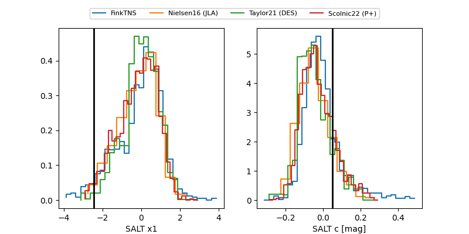

FINK: ZTF25abnsiee
Lasair: ZTF25abnsiee
ALeRCE: ZTF25abnsiee
TNS: 2025wuo
YSE: 2025wuo
ZTF25abnsiee (ztf,fink)
2025wuo (tns,yse)
ATLAS25kyy (atlas)
equatorial (ra, dec) = (110.0801,+30.94989)
galactic (l, b) = (187.2818,+19.29561)

last ztfg=19.40, ztfr=19.33
1 ztfg, 3 ztfr detections